27-1-负载均衡策略
一、lb调度算法
调度算法一般分几类：
- 第一类是静态调度算法：负载均衡器根据自身设定的规则进行分配，不需要考虑后端节点的健康情况。例如轮询、加权轮询、哈希类型调度算法。
- 第二类是动态调度算法，负载均衡器会判断后端节点的当前状态，来决定是否分发请求。例如链接数最少的优先分发，响应时间短的优先分发，如least_conn、fail等都是动态调度。
rr轮询（round-robin）
按照请求顺序逐一分配给不同的后端节点服务器，如果后端节点宕机，宕机的服务器会被自动从地址池中剔除，新的请求会发给正常的服务器。
Weight（权重轮询）
给后端节点服务器增加权重，数值越大，优先获得客户端请求，可以以服务器配置来决定比例大小，从而解决新旧服务器的性能不均衡问题等。
upstream backend {
server 192.168.178.122 weight=1;
server 192.168.178.121 weight=2;
}
ip_hash
每个请求按客户端IP的hash结果分配，当新的请求到达，将其客户端IP通过哈希算法得到一个唯一值，在随后的客户端请求中，如果客户端的IP哈希值相等，该请求就会固定发给一台服务器。
该调度算法可以解决动态网页中的session共享问题。
注意了使用ip_hash不得再使用weight、backup两个参数，造成冲突了，即使写了也不生效。
upstream chaoge_backend {
ip_hash;
server 192.168.178.121;
server 192.168.178.122;
}
url_hash
根据访问url的hash结果分配，同一个url固定发给一个后端节点。
least_conn
该算法根据后端节点的链接数决定分配请求，哪个机器链接数少，就发给谁。
实践
weight权重实践
按比例分配
[root@lb-5 /etc/nginx/conf.d]#cat proxy.conf
upstream web-pools {
server 172.16.1.7:8080 weight=2;
server 172.16.1.8:8080 weight=8;
}
server {
listen 80;
server_name wordpress.yuchaoit.cn;
location / {
proxy_pass http://web-pools;
include /etc/nginx/proxy_params.conf;
}
}
[root@lb-5 /etc/nginx/conf.d]#systemctl restart nginx
- 此时是二、八开，也就是
1:4的比率
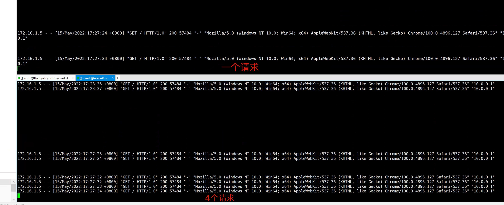
ip_hash实践
和ip_hash类似，该算法根据客户端请求的URL信息进行hash得到唯一值，让每个URL固定的发给同一个后端服务器，后端服务器为缓存服务器效果最佳。
Nginx本身是不支持url_hash的，需要单独安装hash模块
url_hash(web缓存节点)和ip_hash(会话保持)功能类似。
[root@lb-5 /etc/nginx/conf.d]#cat proxy.conf
upstream web-pools {
ip_hash;
server 172.16.1.7:8080 ;
server 172.16.1.8:8080 ;
}
server {
listen 80;
server_name wordpress.yuchaoit.cn;
location / {
proxy_pass http://web-pools;
include /etc/nginx/proxy_params.conf;
}
}
[root@lb-5 /etc/nginx/conf.d]#systemctl restart nginx
使用10.0.0.xx网段的ip访问，发现被固定发给了web-8。
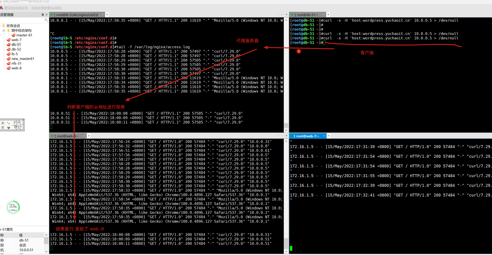
使用172.16.1.xx网段的ip访问，发现被固定发给了web-7。
体现ip_hash的作用。
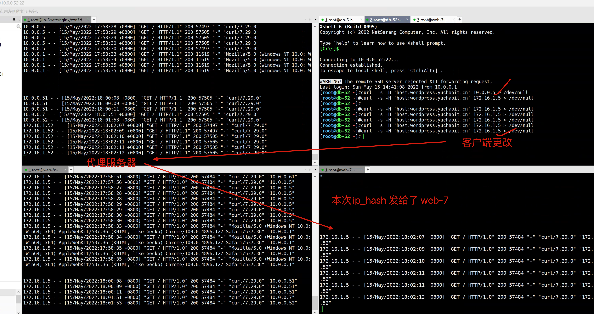
url_hash实践
[root@lb-5 /etc/nginx/conf.d]#nginx -t
nginx: the configuration file /etc/nginx/nginx.conf syntax is ok
nginx: configuration file /etc/nginx/nginx.conf test is successful
[root@lb-5 /etc/nginx/conf.d]#cat proxy.conf
upstream web-pools {
hash $request_uri;
server 172.16.1.7:8080 ;
server 172.16.1.8:8080 ;
}
server {
listen 80;
server_name wordpress.yuchaoit.cn;
location / {
proxy_pass http://web-pools;
include /etc/nginx/proxy_params.conf;
}
}
[root@lb-5 /etc/nginx/conf.d]#systemctl restart nginx
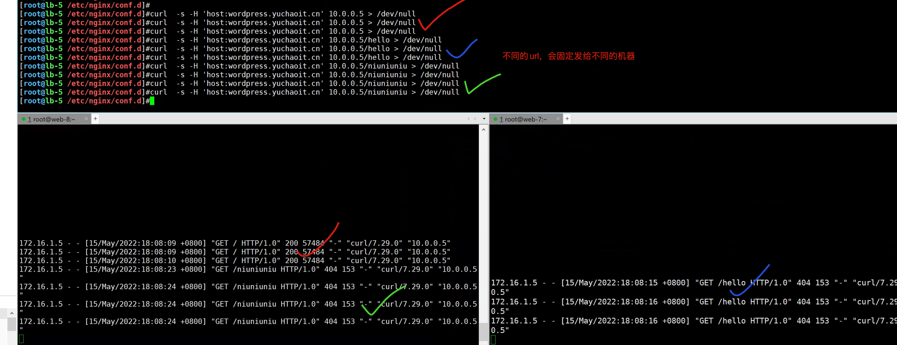
总结
目前了解参数具体用法与效果即可，具体是否添加该参数，要结合实际运维环境，否则可能会导致反向代理异常，因此初期先别用关于hash的参数，一般轮训，或者weight即可。
二、lb调度参数
参数作用
backup
被标记为backup参数的服务器，只有服务器池内的其他机器都无法访问了，才会使用该该机器。
max_failes
允许请求失败的次数，一般和fail_timeout结合用
fail_timeout
经过max_failes失败后服务暂停的时间。
down
标记这个机器停止使用了。
max_conns
限制最大接收的连接数。
参数实验
down参数
[root@lb-5 /etc/nginx/conf.d]#cat proxy.conf
upstream web-pools {
server 172.16.1.7:8080 down;
server 172.16.1.8:8080;
}
server {
listen 80;
server_name wordpress.yuchaoit.cn;
location / {
proxy_pass http://web-pools;
include /etc/nginx/proxy_params.conf;
}
}
[root@lb-5 /etc/nginx/conf.d]#systemctl restart nginx
- 确保web-7，和web-8都正常运行后端服务。
- 检测日志
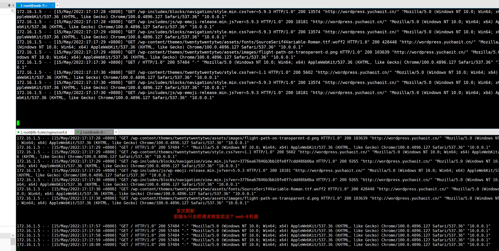
- 此时如果web-8挂了，会导致网站502。
然后可以调换down参数的位置，再试试
backup实验
[root@lb-5 /etc/nginx/conf.d]#cat proxy.conf
upstream web-pools {
server 172.16.1.7:8080 backup;
server 172.16.1.8:8080 ;
}
server {
listen 80;
server_name wordpress.yuchaoit.cn;
location / {
proxy_pass http://web-pools;
include /etc/nginx/proxy_params.conf;
}
}
- web-7被标记为备份机器
- 请求只会发给web-8
- web-8宕机后，web-7会接替工作。
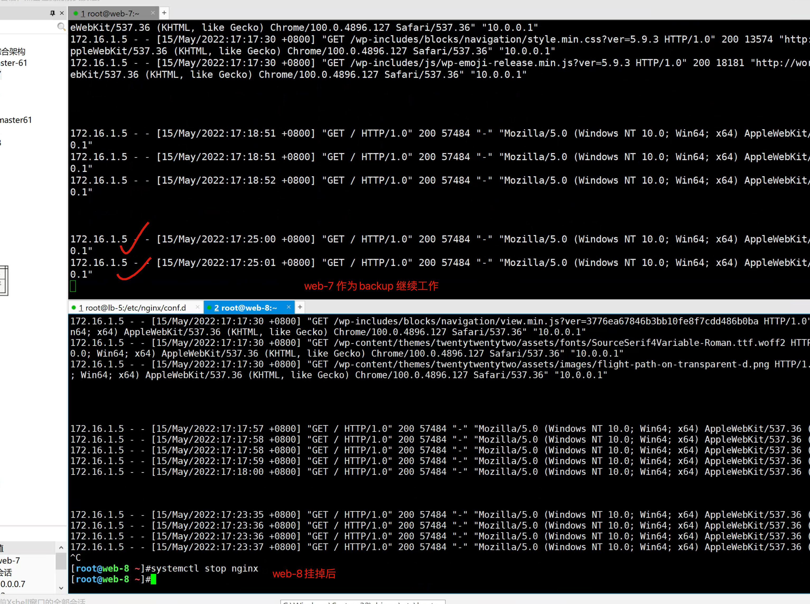
max_fails和fail_timeout参数
用于nginx探测后端节点是否异常的参数，默认是在10s内，允许某一个节点是宕机的，会把请求交给另外一个节点处理。
简单说就是，在10秒内，出现1次不可用，就判断这个节点是的故障的，且判定后的10秒内不会再发给这个节点，直到10s后的下一次探测。
[root@lb-5 /etc/nginx/conf.d]#cat proxy.conf
upstream web-pools {
server 172.16.1.7:8080 weight=1 fail_timeout=10s max_fails=1;
server 172.16.1.8:8080 weight=1 fail_timeout=10s max_fails=1;
}
server {
listen 80;
server_name wordpress.yuchaoit.cn;
location / {
proxy_pass http://web-pools;
include /etc/nginx/proxy_params.conf;
}
}
[root@lb-5 /etc/nginx/conf.d]#systemctl restart nginx
这个参数不易测试，因为某一个节点挂掉，nginx也会把请求发给另外一个节点，因此了解即可。
故障实践
思考问题，如果web-8的php突然挂了，客户端访问情况会是如何？以及如何看待这个问题。
1. 测试 systemctl stop nginx
2. 测试 systemctl stop php-fpm
三、根据用户client_agent判断转发
需求
1. 如果用户是iphone跳转到iphone页面
2. 如果用户是Android跳转的android页面
3. 如果用户是PC端，跳转到PC页面
4. 如果用户是IE浏览器，提示他该升级电脑了。。。IE已经被世界淘汰了。
nginx配置文件
vim /etc/nginx/conf.d/huya.yuchaoit.conf
# 这里是简单用法，更精确的应该是配置如 m.huya.com这样的移动端虚拟主机
upstream android {
server 172.16.1.7:33333;
}
upstream iphone {
server 172.16.1.8:33333;
}
upstream pc {
server 172.16.1.7:22222;
server 172.16.1.8:22222;
}
server {
listen 80;
server_name huya.yuchaoit.cn;
location / {
# 默认页面，交给pc
proxy_pass http://pc;
include proxy_params.conf;
# 判断是iphone用户，基于正则且不区分大小写
if ($http_user_agent ~* "iphone"){
proxy_pass http://iphone;
}
# 判断是安卓用户
if ($http_user_agent ~* "android"){
proxy_pass http://android;
}
# 如果是IE，禁止访问
if ($http_user_agent ~* "msie"){
return 403 "禁止访问！！IE被淘汰了都。。抓紧升级吧老哥\n";
}
}
}
重启lb-5
[root@lb-5 /etc/nginx/conf.d]#nginx -t
nginx: the configuration file /etc/nginx/nginx.conf syntax is ok
nginx: configuration file /etc/nginx/nginx.conf test is successful
[root@lb-5 /etc/nginx/conf.d]#
[root@lb-5 /etc/nginx/conf.d]#systemctl restart nginx
创建web机器组的PC页面
web-7
# 先创建 pc页面
cat > /etc/nginx/conf.d/pc.conf<<EOF
server {
listen 22222;
server_name _;
charset utf-8;
location / {
root /test-pc/;
index index.html;
}
}
EOF
# 创建pc页面
mkdir -p /test-pc/ ; echo '我是web-7的 pc页面，你好啊兄弟' > /test-pc/index.html
# 重启
systemctl restart nginx
web-8
# 先创建 pc页面
cat > /etc/nginx/conf.d/pc.conf<<EOF
server {
listen 22222;
server_name _;
charset utf-8;
location / {
root /test-pc/;
index index.html;
}
}
EOF
# 创建pc页面
mkdir -p /test-pc/ ; echo '我是web-8的 pc页面，你好啊兄弟' > /test-pc/index.html
# 重启
systemctl restart nginx
创建web机器组的移动端页面
我们这里是基于端口的虚拟主机，去模拟移动端页面，更精准的是设置域名，但是道理一样的。
web-7
cat > /etc/nginx/conf.d/m.conf<<EOF
server {
listen 33333;
server_name _;
charset utf-8;
location / {
root /test-m/;
index index.html;
}
}
EOF
mkdir -p /test-m/ ; echo '我是web-7的 移动端页面，你瞅啥？小老弟' > /test-m/index.html
systemctl restart nginx
web-8
cat > /etc/nginx/conf.d/m.conf<<EOF
server {
listen 33333;
server_name _;
charset utf-8;
location / {
root /test-m/;
index index.html;
}
}
EOF
mkdir -p /test-m/ ; echo '我是web-8的 移动端页面，你瞅啥？小老弟' > /test-m/index.html
systemctl restart nginx
访问lb机器
设置dns解析
10.0.0.5 www.yuchaoit.cn wecenter.yuchaoit.cn wordpress.yuchaoit.cn huya.yuchaoit.cn
最终图解正确结果
pc页面
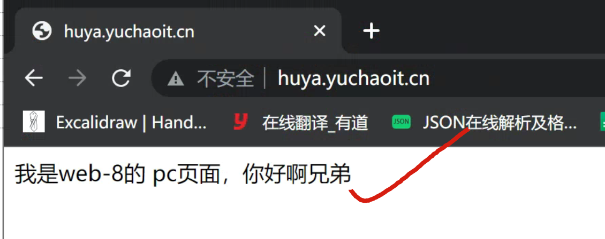
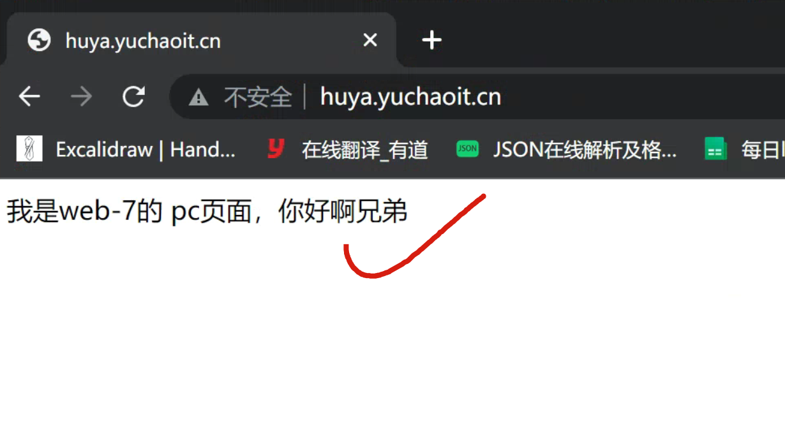
移动端iphone
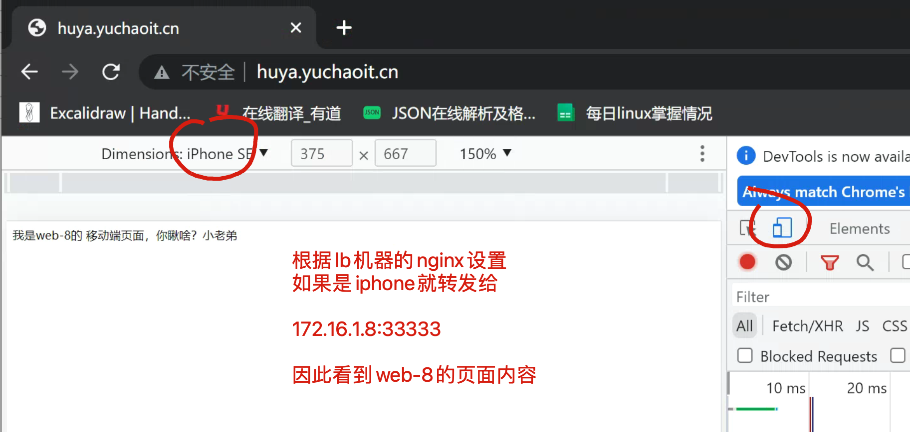
移动端安卓
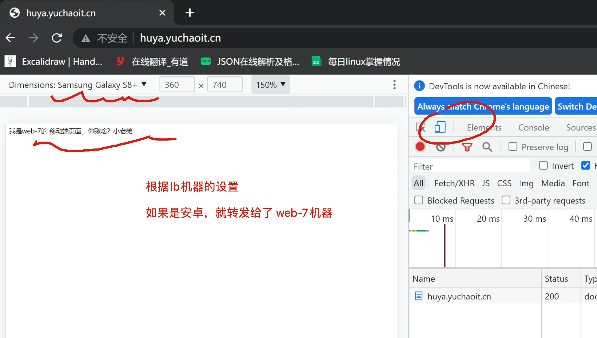
测试ie浏览器
[root@lb-5 /etc/nginx]#tail -1 /etc/hosts
10.0.0.5 huya.yuchaoit.cn
[root@lb-5 /etc/nginx]#curl -A 'msie' huya.yuchaoit.cn
禁止访问！！IE被淘汰了都。。抓紧升级吧老哥
[root@lb-5 /etc/nginx]#
四、大作业
1.完成nginx负载均衡笔记
2.部署好wordpress、wecenter网站
- 你现在作为运维，要给公司上线如下两个网站，提供域名访问，且做好负载均衡。
使用机器
lb-5
web-7 wordpress.yuchaoit.cn wecenter.yuchaoit.cn
web-8 wordpress.yuchaoit.cn wecenter.yuchaoit.cn
并且实现即使随便关掉一个web机器，网站也不会宕机。
并且按照如下架构图部署
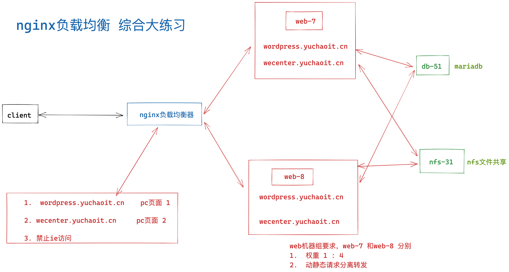